Guía de referencia rápida para métodos de visualización
Es una gráfica ideal para representar cómo una variable continua cambia a lo largo del tiempo o un rango, revelando tendencias.
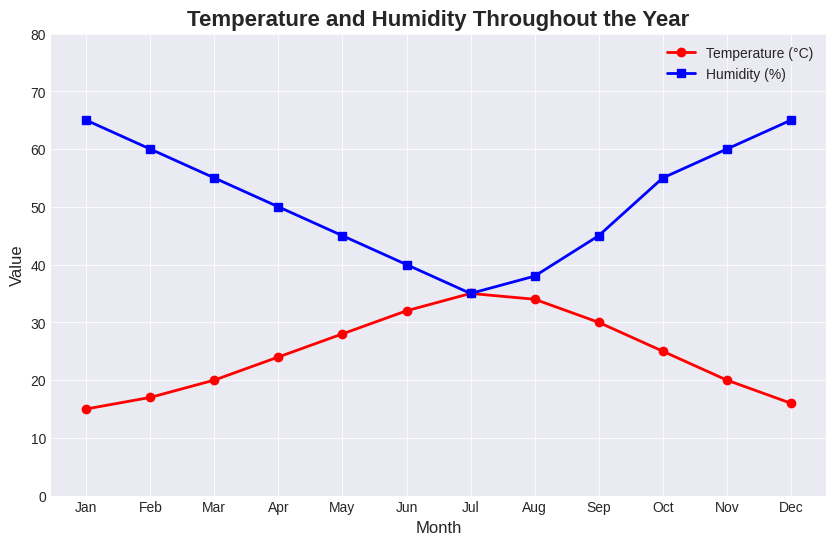
Es una representación visual de datos que usa rectángulos (barras) verticales u horizontales para comparar cantidades entre diferentes categorías.
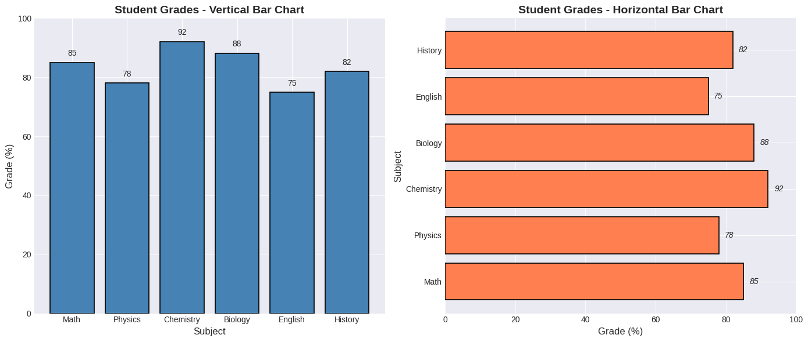
Es una gráfica que muestra la relación entre dos variables numéricas, usando puntos en un plano cartesiano donde cada punto representa un par de valores ordenado, permitiendo visualizar si existe una correlación entre ellas, como una tendencia lineal, curva o la ausencia de ella.
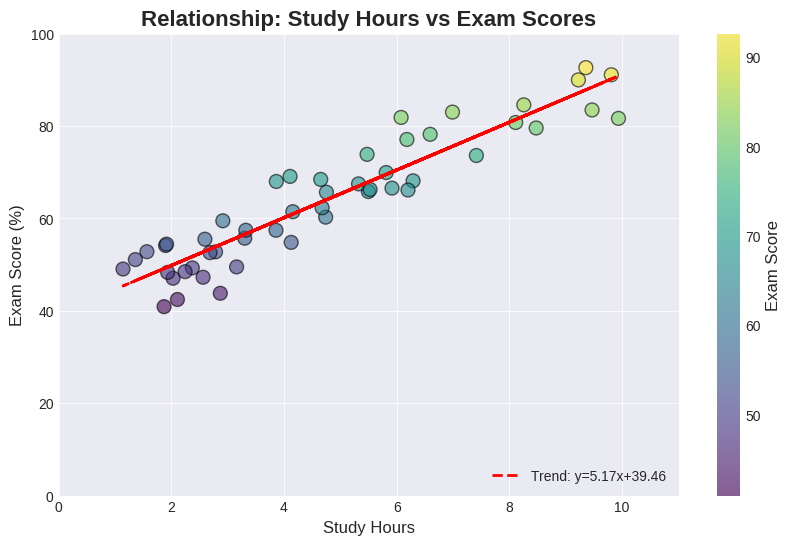
Es una representación gráfica que muestra la distribución de frecuencia de datos numéricos continuos mediante barras.
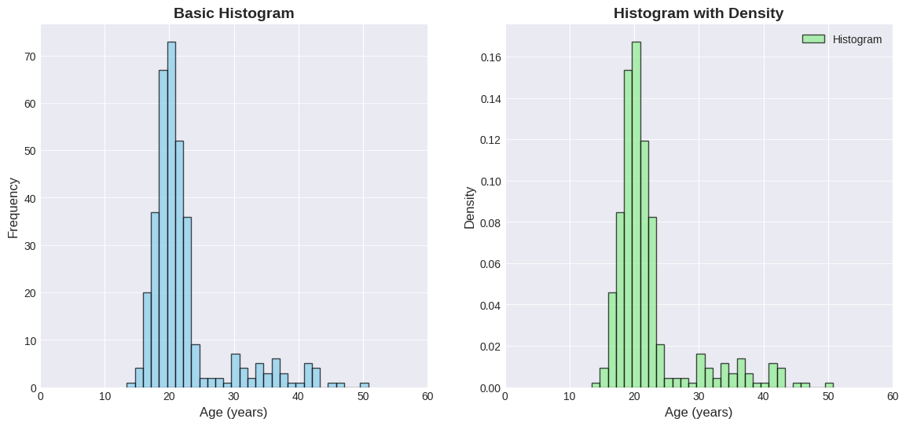
Es una representación gráfica estandarizada que resume visualmente un conjunto de datos numéricos mostrando la mediana, los cuartiles y los valores atípicos en una sola figura.
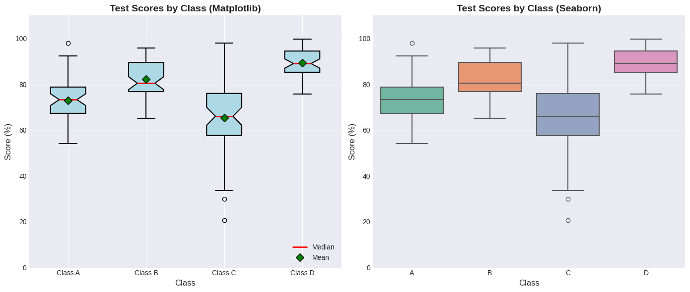
Es una representación visual que muestra datos como un círculo dividido en sectores donde cada sector representa una proporción o porcentaje del total, facilitando la comprensión de la relación entre las partes y el todo.
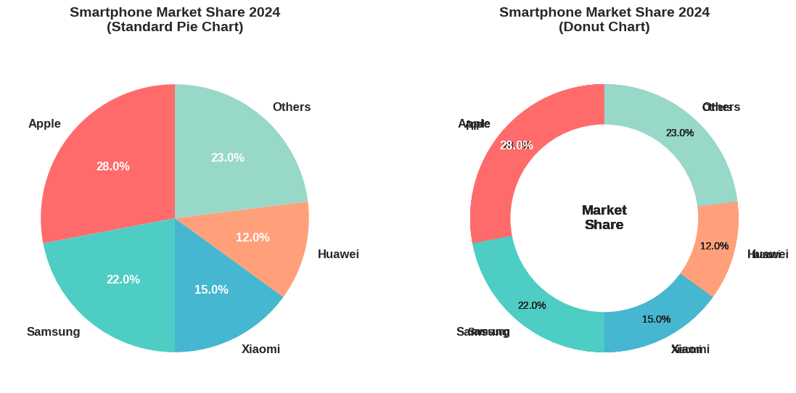
Es una forma suavizada de visualizar la distribución de datos continuos, similar a un histograma pero con una curva continua que estima la función de densidad de probabilidad.
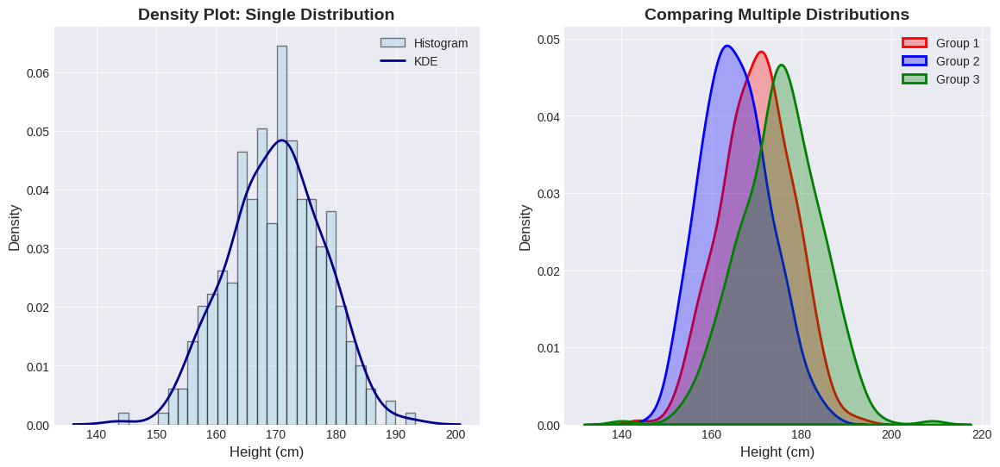
Es una gráfica que muestra la probabilidad de que una variable aleatoria "X" tome un valor menor o igual a un valor específico x.
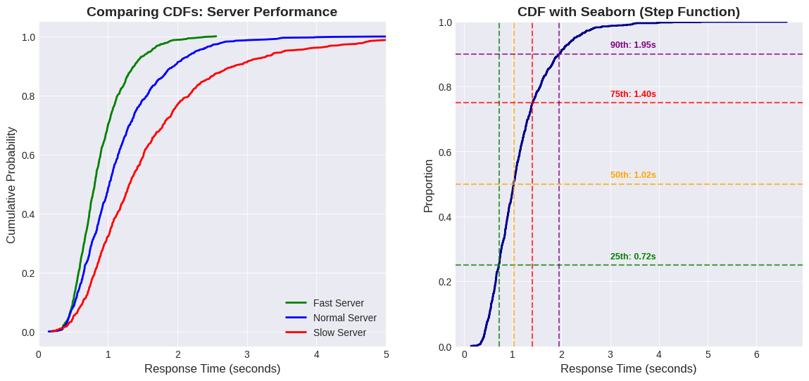
Son un método de visualización utilizado para representar la variabilidad, incertidumbre o precisión de los datos en un gráfico de barras, líneas o dispersión.
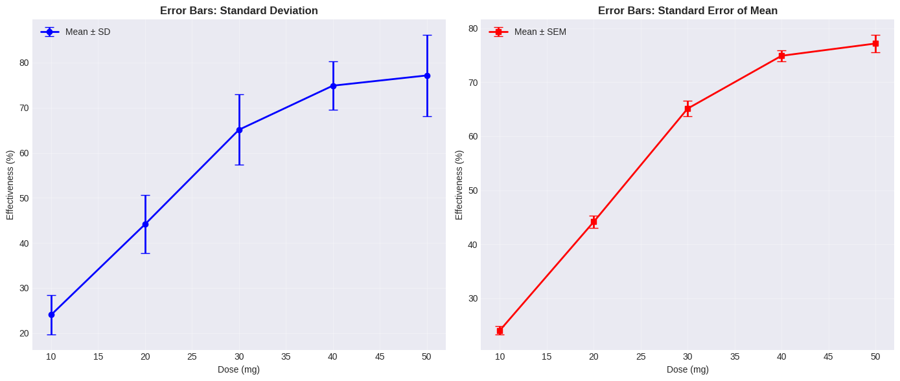
Es un gráfico donde el área de cada rectángulo es proporcional a la frecuencia de esa combinación de categorías, permitiendo ver las relaciones entre dos o más variables cualitativas de forma intuitiva, usando el tamaño de las proporciones y colores para darle significancia estadística.
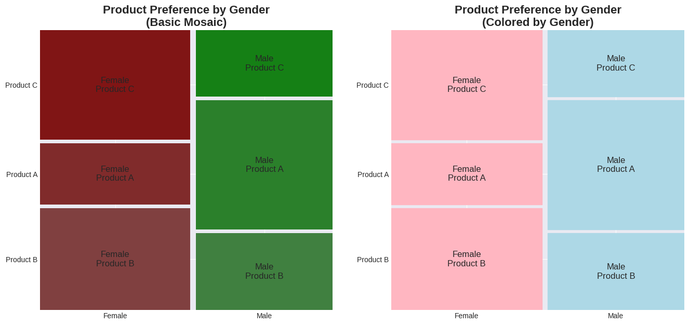
Es una visualización de datos que muestra el cambio entre dos puntos o momentos para múltiples categorías conectando sus valores iniciales y finales con líneas que indican la dirección y magnitud del cambio.
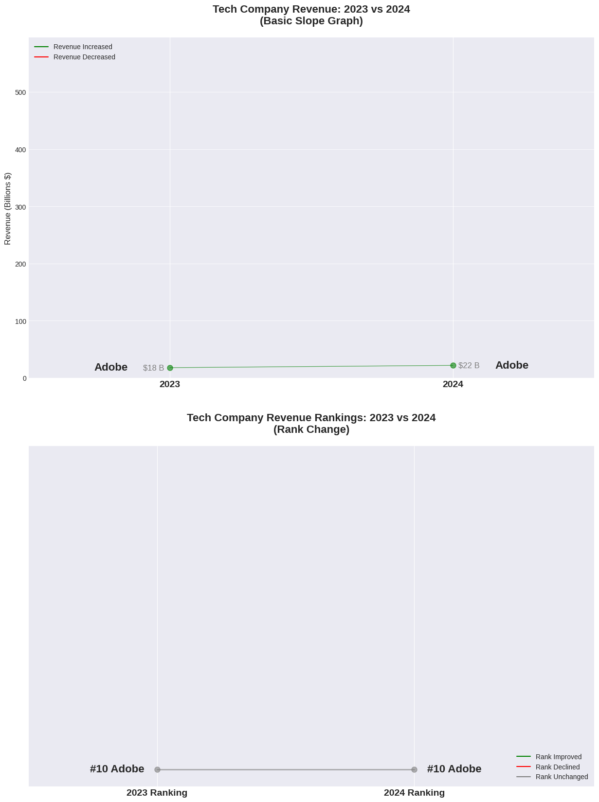
Es una técnica de visualización de datos que presenta jerarquías usando rectángulos anidados, donde el tamaño y color de cada rectángulo muestra datos cuantitativos permitiendo comparar proporciones y ver la estructura de datos complejos de forma compacta y eficiente.
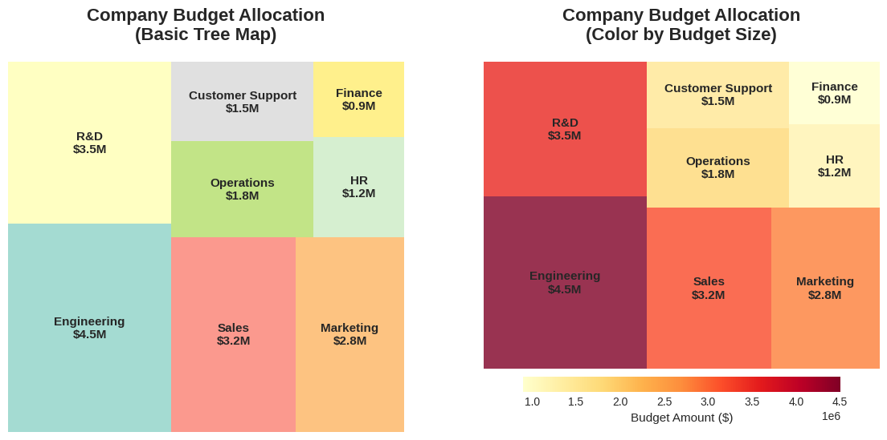
Es una visualización para datos categóricos multidimensionales que muestra flujos y cambios de proporciones entre variables, usando rectángulos verticales (los ejes) para categorías y cintas para conectar las frecuencias de las combinaciones revelando patrones y tendencias como la distribución de un conjunto de datos a través de diferentes fases o características, similar a un río que se divide y se une.
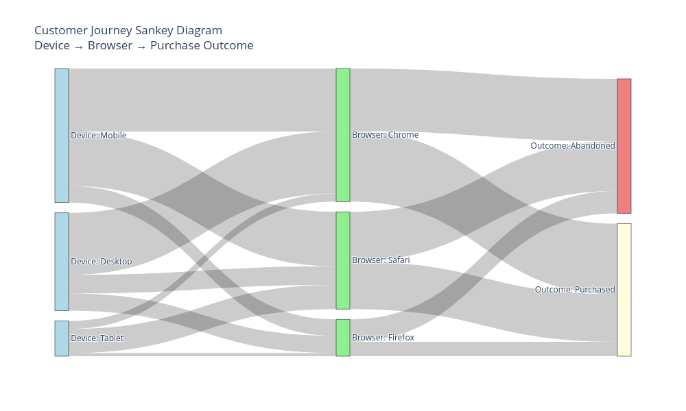
Es un mapa temático que utiliza colores, tonos o sombreados para representar variaciones estadísticas o datos numéricos en áreas geográficas predefinidas mostrando patrones y distribuciones espaciales de manera visual.
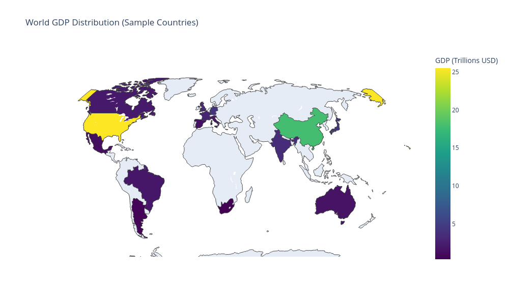